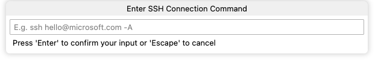

Using SSH to Access the Power of a Desktop Workstation from a Laptop

Target Audience
This post is aimed at researchers who run real computational workloads but do not have formal training in system administration or software engineering. Especially, if you own multiple computers, such as a powerful desktop workstation and a lightweight laptop, and have wondered about the following questions, this post might be useful for you:
“Can I utilize the CPU, memory, and storage of my desktop computer in my home while working remotely—for example, from my university office or a library?”
“Can I work with datasets stored on my desktop computer without downloading or copying them to my laptop? I also don’t like to carry around large external hard drives.”
“Can I monitor progress and diagnose errors in long-running jobs without sitting in front of my desktop machine?”
“Is there a way to avoid constantly worrying about the storage and performance limits of my laptop?”
These challenges are unlikely to be unique to me. As working with large datasets and computationally intensive tasks has become a standard part of academic research, many researchers face similar constraints in their day-to-day workflows.
The solution I eventually settled on is based on SSH (Secure Shell). It is not a new idea in computing circles, but it seems like it is under-documented, under-taught, and under-utilized in the research community. When I first saw the term “SSH”, it sounded like a tool for software developers and system administrators, but not for academic researchers. However, after exploring its capabilities, I realized that SSH can be a powerful tool for researchers who work on intensive computational tasks and large datasets as well. Also I believe that the opportunity cost of learning and setting up SSH is much lower than the potential benefit it can bring to your workflow.
Being able to seamlessly access and utilize resources of a more powerful machine can be beneficial. My hope is to be helpful to those who might be facing similar challenges in their workflow by sharing my experience.
Background of My Situation
I use two machines for my research work. One is a relatively powerful desktop computer, a Mac Studio, that I mainly use at home. It is the most powerful (and expensive) machine I have ever owned. The other is a lightweight laptop, a ThinkPad running Linux (Ubuntu), which I use when working from my university office, the library, or elsewhere.
Whenever I worked on my laptop, the same questions kept coming back to me: how could I best utilize the power of my desktop computer while I was away from home? My laptop has limited storage and computing capacity, while my desktop has abundant resources that often sat idle simply because I was not physically in front of it.
After some research and trial-and-error, I found a solution that works well for me: using the SSH (Secure Shell) protocol together with the VS Code Remote SSH extension1. Once I establish an SSH connection between my laptop and desktop computer, I can access the desktop computer remotely. This allows me to run commands, execute programs, and manage files on the desktop machine from my laptop, as if I were physically sitting in front of it. For typical coding, data analysis, and job monitoring, I have found the remote setup to feel effectively indistinguishable from working locally2.
In the next section, I outline the steps I took to set up this workflow. I will not go into exhaustive technical details, but rather describe how I set up SSH and VS Code Remote SSH in practice. But before that, let me walk through the basic idea behind this workflow.
Mental Model
Basic idea & How SSH fits in
In my setup, the desktop computer acts as the machine where all computation and data live, while the laptop serves primarily as an interface for accessing and controlling that machine. Rather than copying files back and forth or trying to keep multiple machines in sync, I treat the desktop computer as the single place where my research environment exists.
In more technical terms, the desktop computer functions as a server that is always available on my home network, while the laptop acts as a client that connects to it on demand. When the two are connected, the laptop sends commands to the desktop computer, all computation happens on the desktop machine, and the results are sent back to the laptop for display.3
Because this communication happens over a network, it needs to be secure and private. This is where SSH comes in. SSH provides a secure way for the laptop to connect to the desktop computer and communicate with it without exposing the connection to others on the network.4
Why VS Code Remote SSH matters
While SSH alone is sufficient for running commands and managing files, when you are coding through VS Code, VS Code Remote SSH extension is what makes this setup truly practical for coding and data analysis. It allows the VS Code interface on my laptop to connect to a full development environment running on the remote desktop computer. Extensions that are relevant to coding and execution run on the remote machine, while the editor interface remains local. Instead of merely accessing files, I can open remote project directories directly in VS Code, edit code, run scripts, use the integrated terminal, and take advantage of language features such as autocomplete and debugging—all operating in the remote environment where the data and computation reside. From the user’s perspective, the editor behaves just like local VS Code, even though all IDE functionality runs on the desktop machine.
For more details about the VS Code Remote SSH extension, please refer to the official documentation: Remote Development using SSH - Visual Studio Code.
Setting up VS Code Remote SSH
With this mental model in mind, the actual setup is relatively straightforward. In the remainder of this section, I walk through the steps I took to configure SSH access on my desktop and laptop computers and how to connect them, and then set up VS Code Remote SSH.
Step 1: Preparing the Desktop Computer (The Server)
Step 1.1 Enabling SSH Access
If you are using a Mac (like me) and want to make it as a server that can be accessed via SSH, you need to enable Remote Login in the System Preferences.
- System Settings > General > Sharing
- Turn on “Remote Login”
- Click next to “Remote Login”
- Under “Allow access for”, select “Only these users” and add your user account.
This starts the SSH server on your Mac.
Step 1.2 Preventing Sleep Mode
Here are the steps:
- System Settings > Energy
- In the Energy settings:
2.1 Turn on “Prevent automatic sleeping when the display is off” and “Wake for network access” options. 2.3 Turn off the “Put hard disks to sleep when possible” option.
Step 1.3 Finding Username & Hostname
Open Terminal on your Mac, and run
whoami # to get your username
hostname # to get your hostname (i.e., server name)<username@hostname> will be your SSH address to connect to this Mac from your laptop. For example, if whoami returns jo, and hostname returns jos-Mac-Studio.local, then your SSH address
Step 2: Setting up the Laptop (The Client)
I assume that you have already installed VS Code on your laptop.
Step 2.1 Generate an SSH Key
Open Terminal on your laptop, and run the following command
ssh-keygen -t ed25519Press Enter to accept the default file location. What this does is to generate a pair of cryptographic keys (public and private keys) using the ed25519 algorithm for SSH authentication in your ~/.ssh directory on your laptop.
Step 2.2 Copy the Public Key to the Server
Next, copy the public key to the server (in my case, the Mac Studio). A copy of the public key of your laptop needs to be transferred to the server using the SSH address you found in Step 1.3.
Run the following command in your laptop terminal:
ssh-copy-id <username@hostname>Please replace <username@hostname> with your actual SSH address of the server.
Step 2.3 Test SSH Connection
Now, test the plain SSH connection on your laptop terminal:
ssh <username@hostname>If you successfully connect to the server, you should see a terminal prompt of the remote machine. You can type exit to disconnect from the server and return to your laptop terminal.
Step 3: Setting up VS Code Remote SSH on Your Laptop
Step 3.1 Install the Remote - SSH Extension
On your laptop, open VS Code, go to the Extensions view (Ctrl+Shift+X or Cmd+Shift+X), and search for “Remote – SSH” extension by Microsoft. Install it.
Step 3.2 Add a New SSH Host
Open your laptop VS Code, and follow these steps:
- Open the Command Palette (Ctrl+Shift+P or Cmd+Shift+P), and type “Remote-SSH: Add New SSH Host …”. Select it.
- In the input box, enter the SSH address of your server that you found in Step 1.3, e.g.,
<username@hostname>. Press Enter.

Step 3.3 Connect to the SSH Host
- In VS Code, open the Command Palette again.
- Type “Remote-SSH: Connect to Host” and select the host you just added (e.g.,
<username@hostname>). - A new VS Code window will open, connected to the remote server. You can now open folders, edit files, and run commands on the remote machine directly from this window.
Or, you can also click the >< icon in the bottom-left corner of VS Code window, and select the SSH host from the list.
Step 3.4 Quick Check:
- Open the integrated terminal in VS Code (Ctrl+
or Cmd+). - Type
pwdand press Enter. You should see the home directory of the remote server.
If you see that, congratulations! You have successfully set up VS Code Remote SSH
Step 4: Setup Tailscale for Secure Remote Access Across Networks
Although the setup above works well when both your desktop computer (server) and laptop (client) are on the same local network (e.g., at home), it typically does not work once they are on different networks (e.g., when your laptop is on university or public Wi-Fi). In such cases, the desktop computer is usually behind a home router and firewall, and direct SSH access from outside the local network is blocked unless you configure port forwarding, which can be complex and potentially insecure.
To connect securely across networks, you can use Tailscale. Tailscale is free, and it creates a secure, encrypted private network between your devices, making them behave as if they were on the same LAN. This allows you to use SSH (and use VS Code Remote-SSH) reliably from anywhere.
Please see this website for more details: Tailscale quickstart.
Step 4.1 Create a Tailscale Account
Create a Tailscale account at Tailscale. You’ll manage devices later from the Tailscale admin console.
Step 4.2 Set up Tailscale on the Server
On the server (your desktop computer), follow these steps:
- Download and install Tailscale on the server machine (Follow the instructions on Tailscale website).
- Open the Tailscale app and log in with your Tailscale account.
- On the Tailscale app, go to “Settings”, and click “Show me how” under CLI integration. Then, allow to add tailscale command to your PATH.
- Open Terminal, and run
tailscale statusto verify that Tailscale is running.
Step 4.3 Set up Tailscale on the Client
On the client (your laptop), follow similar steps. I am using Ubuntu on my laptop, so I followed the instructions for Linux on Tailscale website. I simply ran the codes illustrated there.
Open Tailscale admin console, and verify that both your server and client devices are listed there.
Step 4.4 Turn on MagicDNS
As Tailscale recommends, I checked that Magic DNS is turned on. It makes it easier to connect to your devices using human-readable names instead of IP addresses. To do this, go to the Tailscale admin console > DNS tab, and make sure that the “MagicDNS” option is enabled.
Also, I changed the device name of my server (desktop computer) to something easier to remember. I changed it to “server”.
Step 4.5 Test SSH Connection over Tailscale
Now, you can test SSH connection over Tailscale. Suppose that my username on the server is “shunkei”, and my server device name is “mac”, then I can connect to the server from my laptop terminal with the following command:
ssh shunkei@macStep 4.6 Shortcut for Connecting to the Remote Server
It’s cumbersome to type ssh shunkei@mac command every time I want to connect to the remote server through Terminal. You can set your SSH config file to create a shortcut. Open your laptop terminal, and edit the ~/.ssh/config file (create it if it does not exist). You can open it with nano editor with nano ~/.ssh/config command (or code ~/.ssh/config if you want to use VS Code). Then, add the following lines:
Host <server-name>
HostName <HostName>
User <username>
IdentitiesOnly yesYou need to replace <server-name>, <HostName>, and <username> with your actual values. <server-name> is a user-defined alias for the server, and what you will type after ssh command. <HostName> is the machine name you set in Tailscale (e.g., mac-studio in my case). <username> is your username on the server (the output of whoami command on the server machine).
For example, if ~/.ssh/config file contains the following lines:
Host server
HostName mac
User shunkei
IdentitiesOnly yesThen you can simply run ssh server on Terminal to connect to the remote server.
Congratulations! You have successfully set up SSH access to your remote server over Tailscale. You can now work on your remote server from anywhere, without being bothered by the limitations of your laptop.
Bonus
Opening a Specific Project Directory on the Remote Server from the Laptop Terminal
If you are the code command user to open VS Code from Terminal, like,
code ~/Projects/MyResearchProjectyou can also open a specific project directory on the remote server directly from your laptop terminal.
code --remote ssh-remote+<username@hostname> /Users/username/Projects/MyResearchProjectYou need to replace <username@hostname> with your actual SSH username and server address. If you have set up Tailscale and SSH config file as described above, you can use the shortcut name you defined in the SSH config file. Note that you don’t need to run ssh <username@hostname> command before code command.
For example, if you defined server as the shortcut name, then you can run:
code --remote ssh-remote+server /Users/username/Projects/MyResearchProjectYou should see that VS Code opens the specified project directory on the remote server.
Using tmux for Persistent Sessions (Optional)
Now that you have SSH access to your remote server, you might want to consider using tmux, a terminal multiplexer that allows you to create persistent terminal sessions. I will talk about tmux in more detail in another post.
References
Footnotes
SSH is a cryptographic network protocol that allows a user to securely access and control a remote computer over a network↩︎
For highly interactive or graphics-heavy tasks, it may behave differently↩︎
At this point, you may wonder whether this is similar to controlling the remote machine’s screen. It is not. This setup is different from traditional remote desktop tools that “mirror” the screen of another computer. Here, you are not streaming the entire graphical interface; instead, you are securely connecting to the remote machine and working directly with files and commands there. That is why this approach often feels fast and responsive for coding and data analysis.↩︎
At a high level, SSH allows one computer to open a secure command-line session on another computer over a network. Once this connection is established, commands typed on the laptop are executed on the desktop computer, and the results are sent back to the laptop. From the user’s perspective, it feels similar to working directly on the desktop machine, except that everything happens through a network connection.↩︎